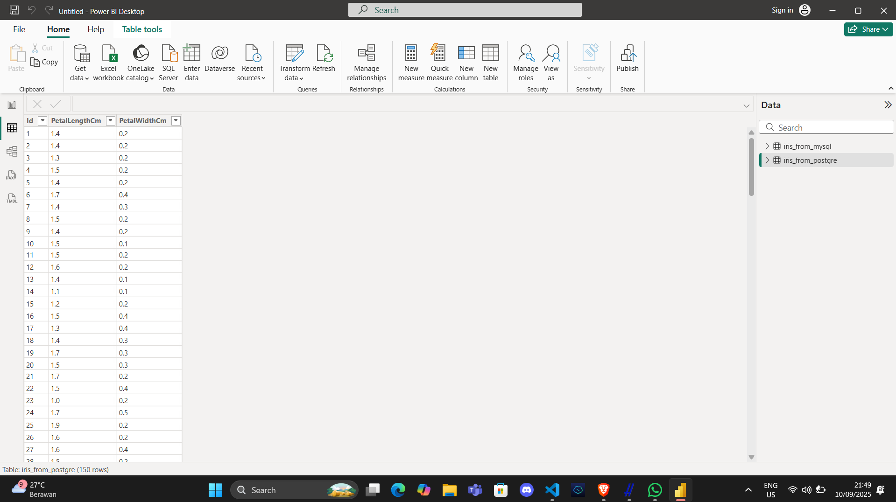
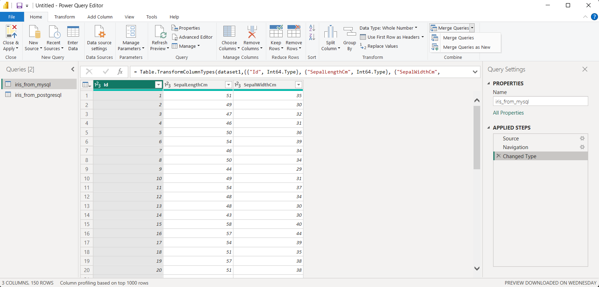
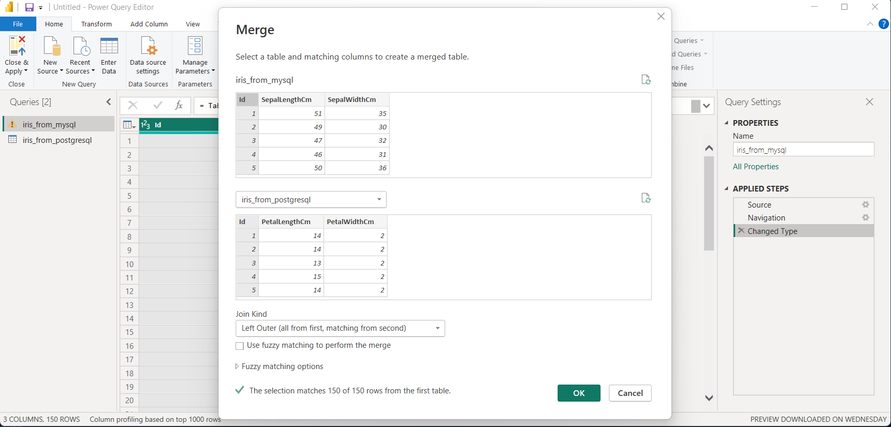
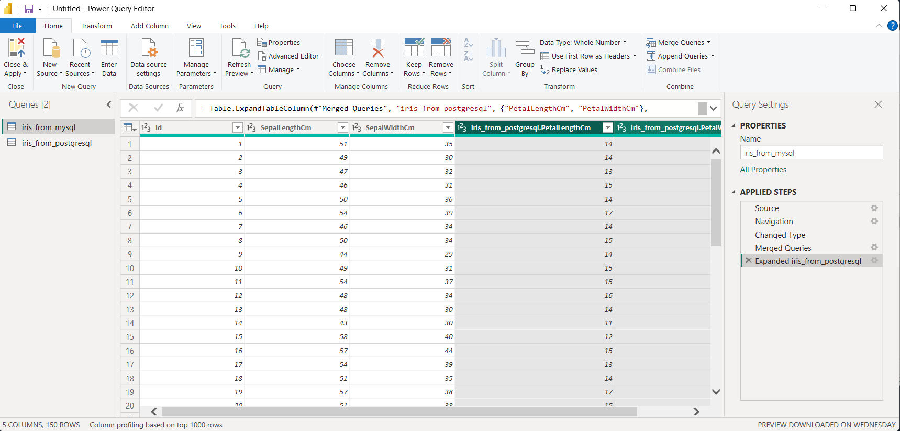
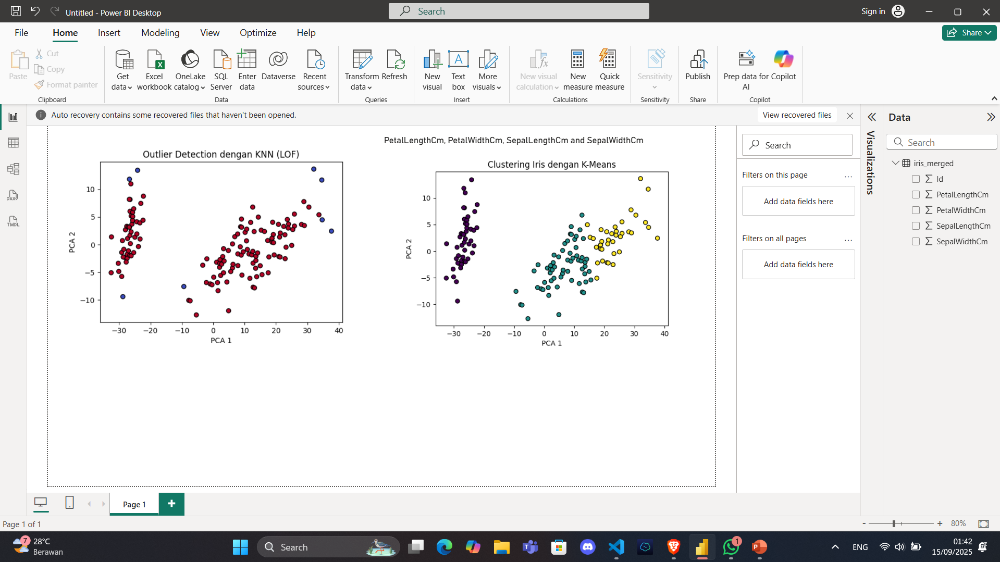

Ekplorasi Data#
Power BI#
Get data menggunakan script python di Power BI
Masuk Power BI
klik Get data > python script
paste code dibawah ini
Menghubungkan Power BI ke Database via Python Script#
Pastikan kamu sudah install:
mysql-connector-python(untuk MySQL)psycopg2atausqlalchemy(untuk PostgreSQL)pandasdotenv
Contoh Script untuk MySQL (Local)
import pandas as pd
from sqlalchemy import create_engine
USER = "root"
PASSWORD = ""
HOST = "localhost"
PORT = 3306
DBNAME = "iris_dataset"
# Buat koneksi ke MySQL (pakai driver PyMySQL)
engine = create_engine(f"mysql+pymysql://{USER}:{PASSWORD}@{HOST}:{PORT}/{DBNAME}")
# Query ke database MySQL
query = "SELECT * FROM iris;"
df = pd.read_sql(query, engine)
dataset = df
---------------------------------------------------------------------------
ModuleNotFoundError Traceback (most recent call last)
Cell In[1], line 11
8 DBNAME = "iris_dataset"
10 # Buat koneksi ke MySQL (pakai driver PyMySQL)
---> 11 engine = create_engine(f"mysql+pymysql://{USER}:{PASSWORD}@{HOST}:{PORT}/{DBNAME}")
13 # Query ke database MySQL
14 query = "SELECT * FROM iris;"
File <string>:2, in create_engine(url, **kwargs)
File /opt/hostedtoolcache/Python/3.10.19/x64/lib/python3.10/site-packages/sqlalchemy/util/deprecations.py:281, in deprecated_params.<locals>.decorate.<locals>.warned(fn, *args, **kwargs)
274 if m in kwargs:
275 _warn_with_version(
276 messages[m],
277 versions[m],
278 version_warnings[m],
279 stacklevel=3,
280 )
--> 281 return fn(*args, **kwargs)
File /opt/hostedtoolcache/Python/3.10.19/x64/lib/python3.10/site-packages/sqlalchemy/engine/create.py:617, in create_engine(url, **kwargs)
615 if k in kwargs:
616 dbapi_args[k] = pop_kwarg(k)
--> 617 dbapi = dbapi_meth(**dbapi_args)
619 dialect_args["dbapi"] = dbapi
621 dialect_args.setdefault("compiler_linting", compiler.NO_LINTING)
File /opt/hostedtoolcache/Python/3.10.19/x64/lib/python3.10/site-packages/sqlalchemy/dialects/mysql/pymysql.py:89, in MySQLDialect_pymysql.import_dbapi(cls)
87 @classmethod
88 def import_dbapi(cls) -> DBAPIModule:
---> 89 return __import__("pymysql")
ModuleNotFoundError: No module named 'pymysql'
Contoh Script untuk PostgreSQL (Supabase)
import pandas as pd
from sqlalchemy import create_engine
from dotenv import load_dotenv
import os
load_dotenv()
USER = os.getenv("user")
PASSWORD = os.getenv("password")
HOST = os.getenv("host")
PORT = os.getenv("port")
DBNAME = os.getenv("dbname")
engine = create_engine(f"postgresql+psycopg2://{USER}:{PASSWORD}@{HOST}:{PORT}/{DBNAME}")
query = "SELECT * FROM iris_full;"
df = pd.read_sql(query, engine)
dataset = df

Proses Penggabungan#
Setelah data masuk ke Power BI (baik dari Python atau koneksi langsung DB), alurnya:
Masuk ke menu Transform

Jika strukturnya sama (misalnya tabel transaksi MySQL dan PostgreSQL punya kolom yang sama), gunakan Append Queries → jadi satu tabel gabungan.
Jika hanya ingin join berdasarkan ID tertentu, gunakan Merge Queries (INNER JOIN, LEFT JOIN, dll).
Klik Close & Apply → data siap dianalisis di Power BI.

Hasil Merge kedua table

Konsep Outlier dengan KNN#
KNN (k-Nearest Neighbors) untuk deteksi outlier biasanya pakai pendekatan distance-based:
Setiap titik dihitung jaraknya ke tetangga terdekat.
Kalau jaraknya jauh dari mayoritas titik → dianggap outlier.
Metode populer: kNN Distance atau Local Outlier Factor (LOF).
Contoh code untuk Outlier Detection menggunakan KNN
# The following code to create a dataframe and remove duplicated rows is always executed and acts as a preamble for your script:
# dataset = pandas.DataFrame(iris_merged.PetalLengthCm, Id, iris_merged.PetalWidthCm, SepalLengthCm, SepalWidthCm)
# dataset = dataset.drop_duplicates()
# Paste or type your script code here:
import pandas as pd
import numpy as np
import matplotlib.pyplot as plt
from sklearn.neighbors import LocalOutlierFactor
# Copy dataset dari Power BI
import pandas as pd
import matplotlib.pyplot as plt
from sklearn.model_selection import train_test_split
from sklearn.neighbors import KNeighborsClassifier
from sklearn.metrics import classification_report, confusion_matrix
from sklearn.decomposition import PCA
# Copy dataset dari Power BI
import pandas as pd
import matplotlib.pyplot as plt
from sklearn.neighbors import LocalOutlierFactor
from sklearn.decomposition import PCA
# Copy dataset Power BI
dataset = dataset.copy()
# Pilih fitur numerik
X = dataset[['SepalLengthCm', 'SepalWidthCm', 'PetalLengthCm', 'PetalWidthCm']]
# KNN Outlier Detection (LOF)
lof = LocalOutlierFactor(n_neighbors=20, contamination=0.05) # contamination=5% dianggap outlier
y_pred = lof.fit_predict(X)
# Tambah kolom hasil ke dataset
dataset['outlier'] = y_pred # -1 = outlier, 1 = normal
# PCA untuk visualisasi
pca = PCA(n_components=2)
X_pca = pca.fit_transform(X)
plt.figure(figsize=(6,4))
plt.scatter(
X_pca[:,0],
X_pca[:,1],
c=dataset['outlier'],
cmap='coolwarm',
edgecolor='k'
)
plt.xlabel("PCA 1")
plt.ylabel("PCA 2")
plt.title("Outlier Detection dengan KNN (LOF)")
plt.show()
Contoh code K-Means clustering
# The following code to create a dataframe and remove duplicated rows is always executed and acts as a preamble for your script:
# dataset = pandas.DataFrame(iris_from_postgresql.PetalLengthCm, iris_from_postgresql.PetalWidthCm, SepalLengthCm, SepalWidthCm)
# dataset = dataset.drop_duplicates()
# Paste or type your script code here:
import pandas as pd
import matplotlib.pyplot as plt
from sklearn.cluster import KMeans
from sklearn.decomposition import PCA
# Copy dataset dari Power BI
import pandas as pd
import matplotlib.pyplot as plt
from sklearn.cluster import KMeans
from sklearn.decomposition import PCA
# Copy dataset dari Power BI
dataset = dataset.copy()
# Pilih fitur (pakai semua fitur kalau sudah ada di dataset)
X = dataset[['SepalLengthCm', 'SepalWidthCm', 'PetalLengthCm', 'PetalWidthCm']]
# K-Means clustering (3 cluster)
kmeans = KMeans(n_clusters=3, random_state=42, n_init=10)
dataset['cluster'] = kmeans.fit_predict(X)
# PCA untuk reduksi dimensi ke 2D
pca = PCA(n_components=2)
X_pca = pca.fit_transform(X)
dataset['pca1'] = X_pca[:, 0]
dataset['pca2'] = X_pca[:, 1]
# Plot
plt.figure(figsize=(6,4))
plt.scatter(
dataset['pca1'],
dataset['pca2'],
c=dataset['cluster'],
cmap='viridis',
edgecolor='k'
)
plt.xlabel("PCA 1")
plt.ylabel("PCA 2")
plt.title("Clustering Iris dengan K-Means")
plt.show()
Hasil Python Visualisasi
